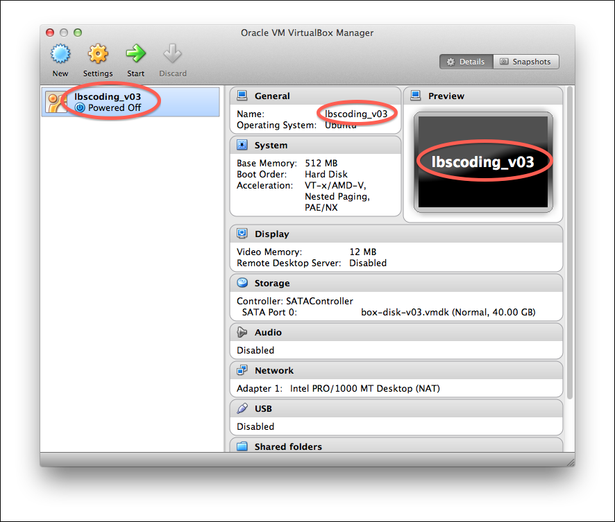

Session 2 Pre-Checklist
First, download and setup the
lbscoding_v03
VirtualBox files.
Now ensure you can comfortably complete this list of tasks:
- Start the lbscoding_v03 virtual machine

- Login (username: lbs, password: lbscoding)
- Run Terminal
- List the contents of /tmp
- Create a new directory in /home/lbs called my_dir
- Create an empty file in /home/lbs/my_dir called file_1
- Remove the directory /home/lbs/my_dir
- Look at the manual page for the find command for an example of how to use a new command
- Use Text Editor to create a new Ruby script that prints the string "Hello World"
- Run this new script using the ruby command
Any questions, please make sure you contact me before class.